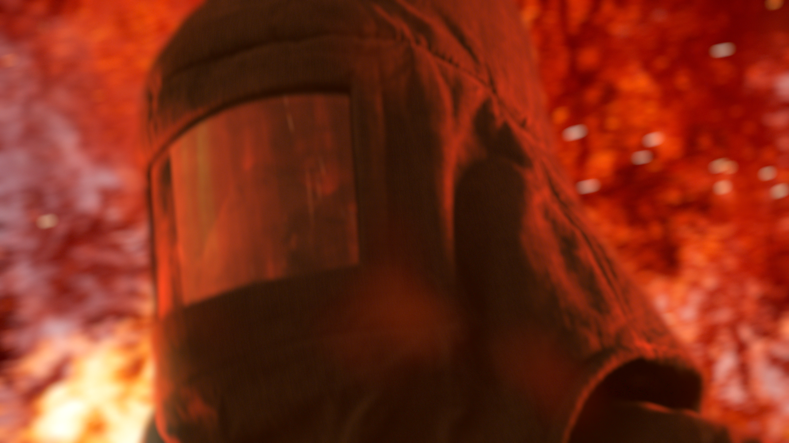
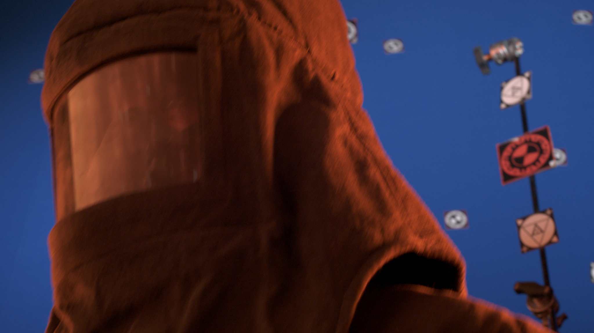
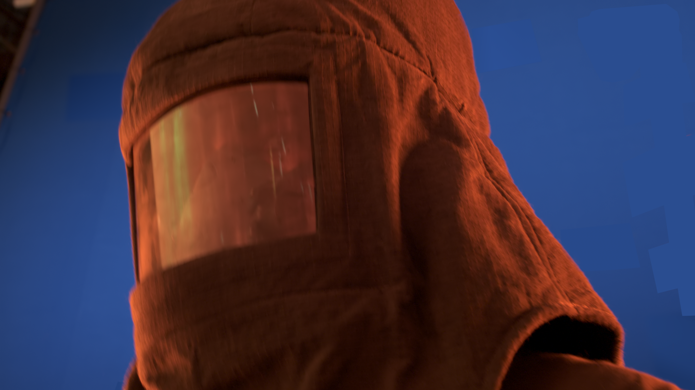
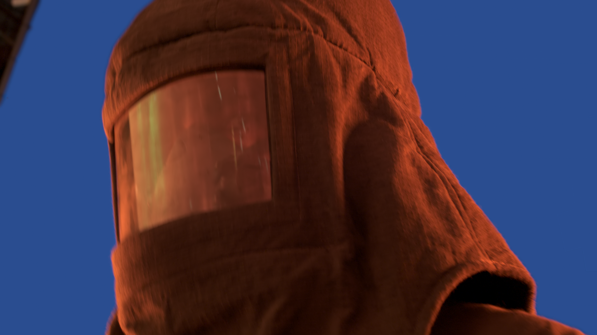
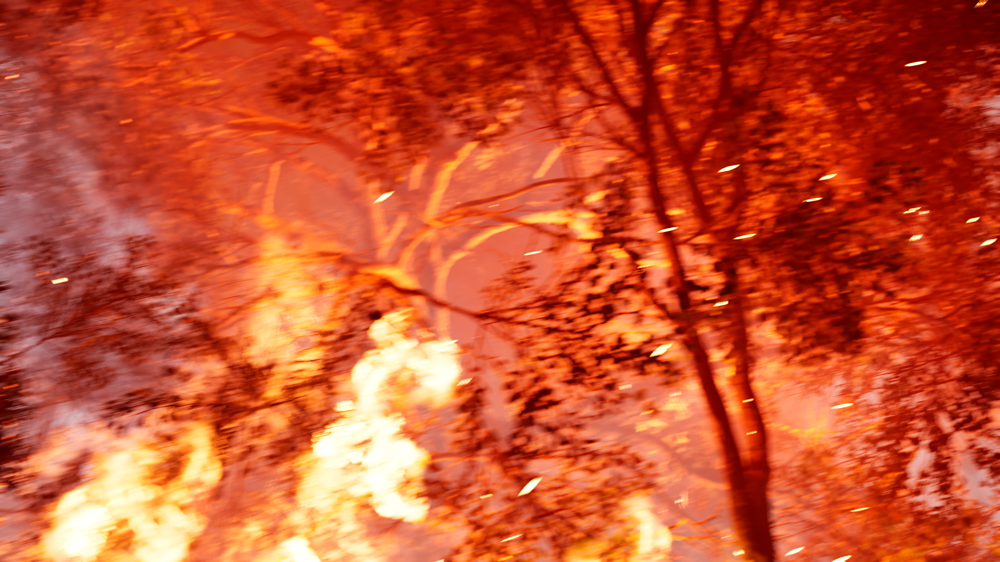

---

layout: default

---
<section class="helios_breakdown">
	<h2 class="portfolio_headings">Helios Breakdown</h2>

	<p>The VFX work for the shot required compositing an actor in front of
	a blue screen, with the background being replaced by an unreal environment. As Lead Compositor, I was responsible for plate preparation, rotoscoping, keying and the overall composit with the background plate.</p>

	<div class="helios_image">
		
		<figcaption>Final image composit of shot.</figcaption>
	</div>

	<h3 class="portfolio_headings">Plate Preparation</h3>

	<p>The first process was to remove the markers from the background,
	 leaving a clean blue screen. This involved essentially a key of the actor and the tracking data from the matchmove camera.</p>

	 <div class="helios_image">
	 	
	 	<figcaption>Plate received from camera.</figcaption>
	 </div>

	 <p>Utilising a 2.5D projection system in Nuke, it is possible to take a single frame and project a patch of similar colour to the blue screen as close as possible, using grades and gradients to match the respective lighting conditions of the plate.</p>

	 <p>In order to make sure the blue patches only affect the markers, it was important to utilise the key of the actor. It was necessary to rotoscope the areas where the actor directly occluded the tracking markers, due to the difficulty in pulling a key for markers which had significantly less contrast in comparison to the foreground actor.</p>

	 <div class="helios_image">
	 	
	 	<figcaption>Applying a general key and some roto can provide an alpha matte of the actor.</figcaption>
	 </div>
	 
	 <div class="helios_image">
	 	
	 	<figcaption>Using a 2.5D projection system, it is possible to place, "patches," of blue screen affecting the markers.</figcaption>
	 </div>

	<p>Due to the movement of the actor, the motion blur as a result means the edges are needed to be rebuilt, due to the semi-transparency of the actor's edges overlapping with the markers.</p>

	<p>The process involves using a keymix and transform to replicate nearby non-occluded edges, whenever these areas of overlap took place. Masking these areas with roto shapes and keyframing the transforms throughout the sequence, it was possible to rebuild the edges taking into account the actor's motions.</p>

	<!--Insert image of edge rebuild here-->

	<p>Once the markers have been removed and the edges successfully restored, in order to pull a substantial key for the actor to be used for the composit, as well as picking up fine edge details, it is important to even out the patches, effectively resulting in a clean blue screen.</p>

	<p>The method largely required pulling a key of the actor and getting a reasonable clean plate using IBK. From that it is then possible to take the difference in rgb values of the plate and the plate preparation, which can then be added back onto the blue screen areas (the alpha of the actor is used to ensure that only the blue screen is affected using a multiply operation).</p>


	<!--Insert images of subtraction images, alpha (possibly?) and final prepared plate-->

	 <div class="helios_image">
	 	
	 	<figcaption>Evening out the blue screen can provide a better key and restore some of the fine edge details.</figcaption>
	 </div>

	<h3 class="portfolio_headings">Keying and Compositing</h3>

	<p>Once the plate has been prepared, the actor is composited onto the moving background, generated from Unreal Engine.</p>

	 <div class="helios_image">
	 	
	 	<figcaption>Background plate made in Unreal Engine, showing a burning forest environment.</figcaption>
	 </div>

	 <p>The background plate is then graded and defocused in accordance with the live-action foreground plate. To supplement the overall direction of the shot, particle elements are placed both behind and in front of the foreground, representing embers and smoke.</p>

	 <p>In areas of great exposure in the background plate, the use of lightwrap allows the foreground actor to sit comfortably within the sequence, to achieve better photorealism.</p>

</section>
